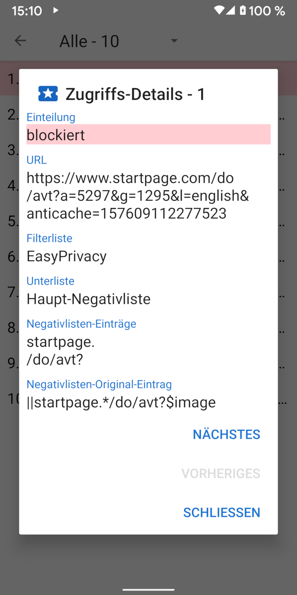

Wenn eine URL geladen wird, wird üblicherweise eine Menge Anfragen für mit der Seite verbundene Ressourcen wie Bilder, CSS-, JavaScript- und andere Dateien an den betreffenden Webserver gestellt. Details dazu können in der Ansicht "Zugriffe" betrachtet werden, welche über das Navigations-Menü links erreicht werden kann. In dieser Ansicht wird auch dargestellt, wie viele (und welche) Anfragen geblockt wurden. Durch Antippen der betreffenden Anfragen können weitere Details dazu angezeigt werden, die zeigen, warum die Anfrage erlaubt oder blockiert wurde.
Clear Browser enthält vier gebräuchliche Filterlisten, die auf der Adblock-Syntax basieren: EasyList, EasyPrivacy, Fanboy’s Annoyance Filterliste und Fanboy’s Social Blocking Filterliste. Diese werden in 22 Unter-Listen aufgeteilt, welche die Ressourcen-Zugriffe in der folgenden Reihenfolge überprüfen:
Listen mit "(URL-Anfang)" prüfen gegen den Anfang einer URL, solche mit "(URL-Ende)" gegen das Ende der URL. Domänen-Listen prüfen gegen bestimmte Domains. Drittanbieter-Listen greifen nur, wenn die Domain der Anfrage eine andere ist als die Domain der aufgerufenen URL. Listen mit regulären Ausdrücken folgen der Syntax für reguläre Ausdrücke. Jede Unter-Liste hat dabei einen oder mehrere Einträge. Bei Domänen-Unterlisten werden die Ressourcen-Zugriffe nur dann überprüft, wenn der erste Eintrag der Domain der aufgerufenen URL entspricht.
Aufgrund von Einschränkungen in Android’s WebView und um die Geschwindigkeit von Anfragen zu steigern, verwendet Clear Browser eine vereinfachte Auswertung der Adblock-Syntax. Dies kann manchmal zu "false positives" führen, bei denen Ressourcen erlaubt oder blockiert werden, die in den originalen Einträgen anders intendiert wären. Eine detailiertere Beschreibung, wie die Listen-Einträge abgearbeitet werden, ist unter stoutner.com verfügbar.
Clear Browser verfügt über drei zusätzliche Filterlisten:
UltraList und UltraPrivacy
blockieren Werbung und Tracker, die EasyList und EasyPrivacy durchlassen. Die dritte Filterliste blockiert alle Drittanbieter-Anfragen.
Eine Anfrage wird dabei nur als Drittanbieter-Anfrage gewertet, wenn die Basis-Domain der Anfrage eine andere ist als die Basis-Domain der angefragten URL.
Lädt zum Beispiel die Seite www.website.com ein Bild von images.website.com, wird diese Anfrage nicht als Drittanbieter-Anfrage gewertet,
da die beiden Anfragen dieselbe Basis-Domain website.com haben.
Alle Drittanbieter-Anfragen zu blockieren verbessert zwar die Privatsphäre, diese Einstellung ist jedoch standardmäßig deaktiviert, da dadurch viele Webseiten verunstaltet werden können.